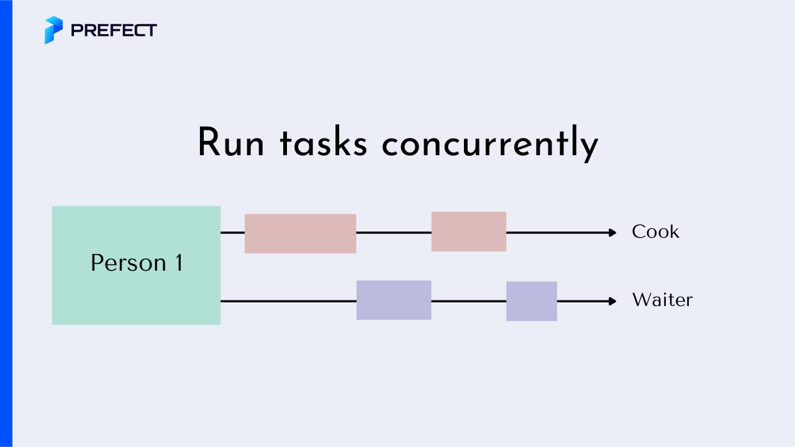

6.11. Tools to Speed Up Code#
This section covers some tools to speed up your code.
6.11.1. Fastai’s df_shrink: Shrink DataFrame’s Memory Usage in One Line of Code#
Show code cell content
!pip install fastai
Changing data types of DataFrame columns to smaller data types can significantly reduce the memory usage of the DataFrame. Instead of manually choosing smaller data types, is there a way that you can automatically change data types in one line of code?
That is when the df_shrink method of Fastai comes in handy. In the code below, the memory usage of the DataFrame decreases from 200 bytes to 146 bytes.
from fastai.tabular.core import df_shrink
import pandas as pd
df = pd.DataFrame({"col1": [1, 2, 3], "col2": [1.0, 2.0, 3.0]})
print(df.info())
<class 'pandas.core.frame.DataFrame'>
RangeIndex: 3 entries, 0 to 2
Data columns (total 2 columns):
# Column Non-Null Count Dtype
--- ------ -------------- -----
0 col1 3 non-null int64
1 col2 3 non-null float64
dtypes: float64(1), int64(1)
memory usage: 176.0 bytes
None
new_df = df_shrink(df)
print(new_df.info())
<class 'pandas.core.frame.DataFrame'>
RangeIndex: 3 entries, 0 to 2
Data columns (total 2 columns):
# Column Non-Null Count Dtype
--- ------ -------------- -----
0 col1 3 non-null int8
1 col2 3 non-null float32
dtypes: float32(1), int8(1)
memory usage: 143.0 bytes
None
6.11.2. Swifter: Add One Word to Make Your Pandas Apply 23 Times Faster#
Show code cell content
!pip install swifter
If you want to have faster pandas apply when working with large data, try swifter. To use swifter, simply add .swifter before .apply. Everything else is the same.
In the code below, I compared the speed of Pandas’ apply and the speed of swifter’s apply using the California housing dataset of 20640 rows.
from time import time
from sklearn.datasets import fetch_california_housing
from scipy.special import boxcox1p
import swifter
import timeit
X, y = fetch_california_housing(return_X_y=True, as_frame=True)
def pandas_apply():
X["AveRooms"].apply(lambda x: boxcox1p(x, 0.25))
def swifter_apply():
X["AveRooms"].swifter.apply(lambda x: boxcox1p(x, 0.25))
num_experiments = 100
pandas_time = timeit.timeit(pandas_apply, number=num_experiments)
swifter_time = timeit.timeit(swifter_apply, number=num_experiments)
pandas_vs_swifter = round(pandas_time / swifter_time, 2)
print(f"Swifter apply is {pandas_vs_swifter} times faster than Pandas apply")
Swifter apply is 16.82 times faster than Pandas apply
Using swifter apply is 23.56 times faster than Pandas apply! This ratio is calculated by taking the average run time of each method after 100 experiments.
6.11.3. pyinstrument: Readable Python Profiler#
Show code cell content
!pip install pyinstrument
Have you ever wanted to get statistics of how long various parts of your code are executed to optimize your code? profile and CProfile allow you to profile your code, but the outputs are long and hard to understand, especially when using high-level libraries like pandas.
For example, applying cProfile to the code using pandas will me the output like below:
%%writefile cprofilers_example.py
import pandas as pd
import numpy as np
df = pd.DataFrame({'nums': np.random.randint(0, 100, 10000)})
def is_even(num: int) -> int:
return num % 2 == 0
df = df.assign(is_even=lambda df_: is_even(df_.nums))
Writing cprofilers_example.py
On your terminal:
$ python -m cProfile cprofilers_example.py
A small portion of the output:
246355 function calls (240252 primitive calls) in 0.311 seconds
Ordered by: standard name
ncalls tottime percall cumtime percall filename:lineno(function)
1 0.000 0.000 0.000 0.000 <__array_function__ internals>:2(<module>)
2 0.000 0.000 0.000 0.000 <__array_function__ internals>:2(append)
1 0.000 0.000 0.000 0.000 <__array_function__ internals>:2(bincount)
5 0.000 0.000 0.000 0.000 <__array_function__ internals>:2(concatenate)
4 0.000 0.000 0.000 0.000 <__array_function__ internals>:2(copyto)
2 0.000 0.000 0.000 0.000 <__array_function__ internals>:2(ndim)
1 0.000 0.000 0.000 0.000 <__array_function__ internals>:2(prod)
2 0.000 0.000 0.000 0.000 <__array_function__ internals>:2(ravel)
2 0.000 0.000 0.000 0.000 <frozen importlib._bootstrap>:1002(_gcd_import)
610/353 0.001 0.000 0.144 0.000 <frozen importlib._bootstrap>:1017(_handle_fromlist)
1208 0.002 0.000 0.002 0.000 <frozen importlib._bootstrap>:103(release)
527 0.000 0.000 0.000 0.000 <frozen importlib._bootstrap>:143(__init__)
527 0.000 0.000 0.004 0.000 <frozen importlib._bootstrap>:147(__enter__)
527 0.000 0.000 0.001 0.000 <frozen importlib._bootstrap>:151(__exit__)
1208 0.002 0.000 0.003 0.000 <frozen importlib._bootstrap>:157(_get_module_lock)
524 0.001 0.000 0.001 0.000 <frozen importlib._bootstrap>:176(cb)
681 0.001 0.000 0.003 0.000 <frozen importlib._bootstrap>:194(_lock_unlock_module)
681/1 0.000 0.000 0.310 0.310 <frozen importlib._bootstrap>:211(_call_with_frames_removed)
4196 0.001 0.000 0.001 0.000 <frozen importlib._bootstrap>:222(_verbose_message)
23 0.000 0.000 0.000 0.000 <frozen importlib._bootstrap>:232(_requires_builtin_wrapper)
521 0.000 0.000 0.000 0.000 <frozen importlib._bootstrap>:342(__init__)
406 0.000 0.000 0.000 0.000 <frozen importlib._bootstrap>:35(_new_module)
880 0.001 0.000 0.005 0.000 <frozen importlib._bootstrap>:376(cached)
727 0.000 0.000 0.001 0.000 <frozen importlib._bootstrap>:389(parent)
498 0.000 0.000 0.000 0.000 <frozen importlib._bootstrap>:397(has_location)
24 0.000 0.000 0.000 0.000 <frozen importlib._bootstrap>:406(spec_from_loader)
498 0.002 0.000 0.009 0.000 <frozen importlib._bootstrap>:477(_init_module_attrs)
498/495 0.001 0.000 0.032 0.000 <frozen importlib._bootstrap>:549(module_from_spec)
524 0.001 0.000 0.001 0.000 <frozen importlib._bootstrap>:58(__init__)
498/1 0.002 0.000 0.310 0.310 <frozen importlib._bootstrap>:650(_load_unlocked)
520 0.000 0.000 0.000 0.000 <frozen importlib._bootstrap>:725(find_spec)
23 0.000 0.000 0.001 0.000 <frozen importlib._bootstrap>:746(create_module)
23 0.000 0.000 0.000 0.000 <frozen importlib._bootstrap>:754(exec_module)
23 0.000 0.000 0.000 0.000 <frozen importlib._bootstrap>:771(is_package)
1208 0.002 0.000 0.002 0.000 <frozen importlib._bootstrap>:78(acquire)
497 0.000 0.000 0.000 0.000 <frozen importlib._bootstrap>:800(find_spec)
1530 0.000 0.000 0.001 0.000 <frozen importlib._bootstrap>:863(__enter__)
1530 0.000 0.000 0.001 0.000 <frozen importlib._bootstrap>:867(__exit__)
520 0.003 0.000 0.032 0.000 <frozen importlib._bootstrap>:890(_find_spec)
2 0.000 0.000 0.000 0.000 <frozen importlib._bootstrap>:937(_sanity_check)
527/1 0.002 0.000 0.311 0.311 <frozen importlib._bootstrap>:956(_find_and_load_unlocked)
527/1 0.002 0.000 0.311 0.311 <frozen importlib._bootstrap>:986(_find_and_load)
406 0.000 0.000 0.000 0.000 <frozen importlib._bootstrap_external>:1004(__init__)
406 0.000 0.000 0.000 0.000 <frozen importlib._bootstrap_external>:1029(get_filename)
406 0.002 0.000 0.011 0.000 <frozen importlib._bootstrap_external>:1034(get_data)
406 0.000 0.000 0.002 0.000 <frozen importlib._bootstrap_external>:1075(path_stats)
68 0.000 0.000 0.000 0.000 <frozen importlib._bootstrap_external>:1153(__init__)
68 0.000 0.000 0.021 0.000 <frozen importlib._bootstrap_external>:1164(create_module)
68/39 0.000 0.000 0.058 0.001 <frozen importlib._bootstrap_external>:1172(exec_module)
3858 0.002 0.000 0.006 0.000 <frozen importlib._bootstrap_external>:121(_path_join)
3858 0.002 0.000 0.003 0.000 <frozen importlib._bootstrap_external>:123(<listcomp>)
812 0.001 0.000 0.002 0.000 <frozen importlib._bootstrap_external>:127(_path_split)
1624 0.000 0.000 0.001 0.000 <frozen importlib._bootstrap_external>:129(<genexpr>)
53 0.000 0.000 0.001 0.000 <frozen importlib._bootstrap_external>:1317(_path_hooks)
820 0.000 0.000 0.002 0.000 <frozen importlib._bootstrap_external>:1330(_path_importer_cache)
1896 0.001 0.000 0.007 0.000 <frozen importlib._bootstrap_external>:135(_path_stat)
497 0.002 0.000 0.026 0.000 <frozen importlib._bootstrap_external>:1367(_get_spec)
497 0.000 0.000 0.026 0.000 <frozen importlib._bootstrap_external>:1399(find_spec)
704 0.001 0.000 0.003 0.000 <frozen importlib._bootstrap_external>:145(_path_is_mode_type)
53 0.000 0.000 0.000 0.000 <frozen importlib._bootstrap_external>:1459(__init__)
424 0.000 0.000 0.000 0.000 <frozen importlib._bootstrap_external>:1465(<genexpr>)
474 0.001 0.000 0.003 0.000 <frozen importlib._bootstrap_external>:1493(_get_spec)
733 0.006 0.000 0.022 0.000 <frozen importlib._bootstrap_external>:1498(find_spec)
651 0.000 0.000 0.003 0.000 <frozen importlib._bootstrap_external>:154(_path_isfile)
53 0.000 0.000 0.001 0.000 <frozen importlib._bootstrap_external>:1549(_fill_cache)
53 0.000 0.000 0.000 0.000 <frozen importlib._bootstrap_external>:159(_path_isdir)
53 0.000 0.000 0.001 0.000 <frozen importlib._bootstrap_external>:1590(path_hook_for_FileFinder)
You can get a more readable output using pyinstrument. To use pyinstrument, simply insert the piece of code you want to profile between profiler.start and profile.end:
%%writefile pyinstrument_example.py
from pyinstrument import Profiler
import pandas as pd
import numpy as np
df = pd.DataFrame({'nums': np.random.randint(0, 100, 10000)})
def is_even(num: int) -> int:
return num % 2 == 0
profiler = Profiler()
profiler.start()
df = df.assign(is_even=lambda df_: is_even(df_.nums))
profiler.stop()
profiler.print()
Writing pyinstrument_example.py
On your terminal, type:
$ pyinstrument pyinstrument_example.py
… and you should see an output like below:
Show code cell source
!pyinstrument pyinstrument_example.py
_ ._ __/__ _ _ _ _ _/_ Recorded: 09:04:59 Samples: 1
/_//_/// /_\ / //_// / //_'/ // Duration: 0.001 CPU time: 0.001
/ _/ v4.0.3
Program: pyinstrument_example.py
0.001 <module> pyinstrument_example.py:1
└─ 0.001 assign pandas/core/frame.py:4416
[2 frames hidden] pandas
0.001 apply_if_callable pandas/core/common.py:346
└─ 0.001 <lambda> pyinstrument_example.py:12
└─ 0.001 is_even pyinstrument_example.py:6
└─ 0.001 new_method pandas/core/ops/common.py:54
[9 frames hidden] pandas, <built-in>
0.001 mod <built-in>:0
_ ._ __/__ _ _ _ _ _/_ Recorded: 09:04:59 Samples: 225
/_//_/// /_\ / //_// / //_'/ // Duration: 0.265 CPU time: 1.897
/ _/ v4.0.3
Program: pyinstrument_example.py
0.265 <module> <string>:1
[4 frames hidden] <string>, runpy
0.265 _run_code runpy.py:64
└─ 0.265 <module> pyinstrument_example.py:1
└─ 0.261 <module> pandas/__init__.py:3
[650 frames hidden] pandas, pyarrow, <built-in>, textwrap...
To view this report with different options, run:
pyinstrument --load-prev 2021-09-15T09-04-59 [options]
6.11.4. Speed Up Your Python Code with Concurrency#
Show code cell content
!pip install -U prefect
If you want to speed up the execution of functions that are not related to each other, you might consider running your code concurrently. Concurrency refers to a system that can do more than one thing simultaneously.
For example, imagine a restaurant with one employee who is both the cook and waiter. While food cooks on the stove, the employee can take orders.

If you want to run your code concurrently with a few additional code, simply add the @task and @flow decorators from Prefect.
Let’s compare the execution time between running code sequentially and running code concurrently.
Running code sequentially:
%%time
import time
from random import randint, seed
def shout(number):
seed(0)
time.sleep(randint(0, 10))
print(f"#{number}")
def count_to(highest_number):
for number in range(highest_number):
shout(number)
count_to(5)
#0
#1
#2
#3
#4
CPU times: user 7.88 ms, sys: 6.35 ms, total: 14.2 ms
Wall time: 30 s
Running code concurrently:
%%time
from prefect import flow, task
@task
def shout(number):
seed(0)
time.sleep(randint(0, 5))
print(f"#{number}")
@flow
def count_to(highest_number):
for number in range(highest_number):
shout.submit(number)
count_to(5)
09:26:15.862 | INFO | prefect.engine - Created flow run 'olive-manul' for flow 'count-to'
09:26:16.706 | INFO | prefect.flow_runs - Created task run 'shout-58a68b34-0' for task 'shout'
09:26:16.713 | INFO | prefect.flow_runs - Submitted task run 'shout-58a68b34-0' for execution.
09:26:16.776 | INFO | prefect.flow_runs - Created task run 'shout-58a68b34-1' for task 'shout'
09:26:16.781 | INFO | prefect.flow_runs - Submitted task run 'shout-58a68b34-1' for execution.
09:26:16.824 | INFO | prefect.flow_runs - Created task run 'shout-58a68b34-4' for task 'shout'
09:26:16.829 | INFO | prefect.flow_runs - Submitted task run 'shout-58a68b34-4' for execution.
09:26:16.837 | INFO | prefect.flow_runs - Created task run 'shout-58a68b34-3' for task 'shout'
09:26:16.840 | INFO | prefect.flow_runs - Submitted task run 'shout-58a68b34-3' for execution.
09:26:16.848 | INFO | prefect.flow_runs - Created task run 'shout-58a68b34-2' for task 'shout'
09:26:16.850 | INFO | prefect.flow_runs - Submitted task run 'shout-58a68b34-2' for execution.
#0
#1
#2
#4
#3
09:26:20.138 | INFO | prefect.task_runs - Finished in state Completed()
09:26:20.147 | INFO | prefect.task_runs - Finished in state Completed()
09:26:20.154 | INFO | prefect.task_runs - Finished in state Completed()
09:26:21.043 | INFO | prefect.task_runs - Finished in state Completed()
09:26:21.062 | INFO | prefect.task_runs - Finished in state Completed()
09:26:21.157 | INFO | prefect.flow_runs - Finished in state Completed('All states completed.')
CPU times: user 1.18 s, sys: 178 ms, total: 1.36 s
Wall time: 6.78 s
[Completed(message=None, type=COMPLETED, result=None),
Completed(message=None, type=COMPLETED, result=None),
Completed(message=None, type=COMPLETED, result=None),
Completed(message=None, type=COMPLETED, result=None),
Completed(message=None, type=COMPLETED, result=None)]
We can see that it is faster to run code concurrently than sequentially.
6.11.5. Covalent: Pythonic Tool to Iterate Quickly on Large ML Models#
Iterating quickly on large ML models in a local environment can be a daunting task for any ML project. Using advanced computing hardware can facilitate this process, but it can be costly, especially when it’s only necessary for a specific portion of the code.
Covalent makes it easy to:
Assign resource-intensive functions to advanced hardware.
Test these functions on local servers before deploying them to expensive hardware.